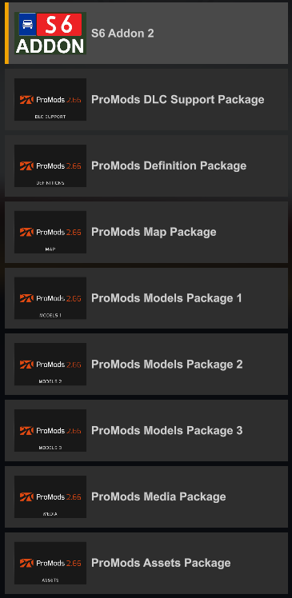
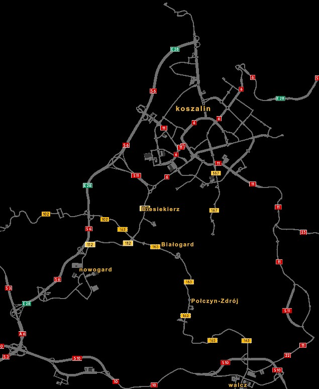

Instalacja: Pobrany plik przenieś do (...)\Dokumenty\Euro Truck Simulator 2\mod i aktywuj w menedżerze modyfikacji w grze, ustawiając wyższy priorytet nad ProMods.
Poland Rebuilding jest i będzie niekompatybilny!
Zalecana kolejność modyfikacji:
Siatka drogowa na wersje 8.7:
